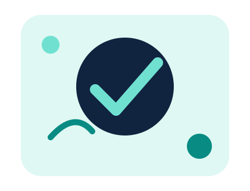

Organização
Arquivos separados e fáceis de encontrar.
IDEIAS • TECNOLOGIA • INOVAÇÃO
Somos uma startup fictícia criada para demonstrar uma entrega web organizada com HTML, CSS e GitHub Actions.
Conheça nosso projeto
Arquivos separados e fáceis de encontrar.
Uma auditoria verifica os arquivos antes da publicação.
O GitHub Actions prepara a pasta dist automaticamente.